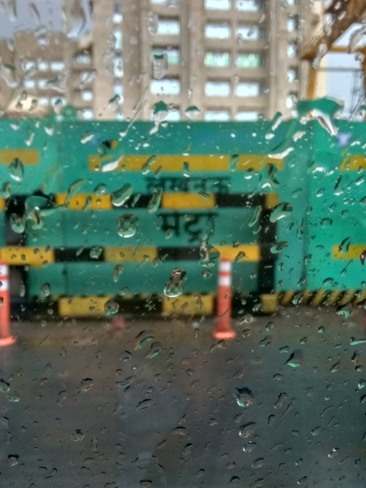
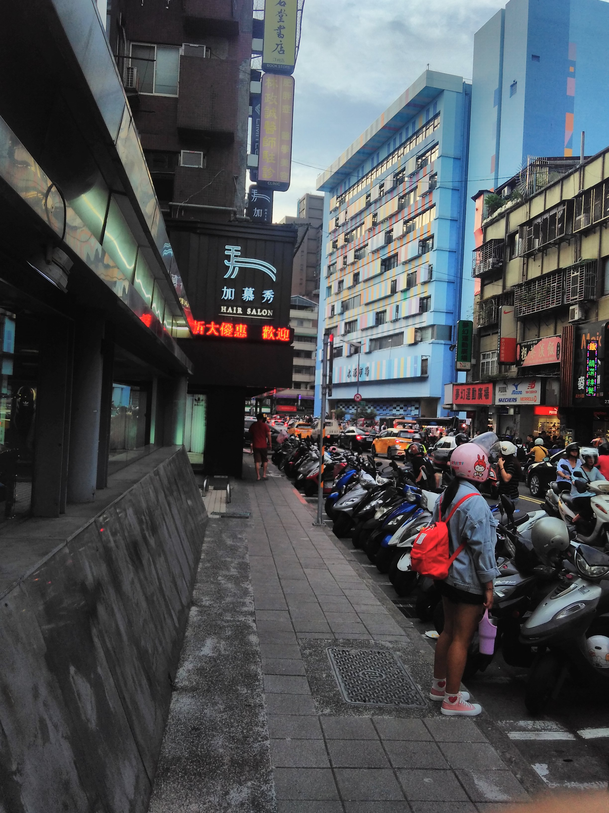
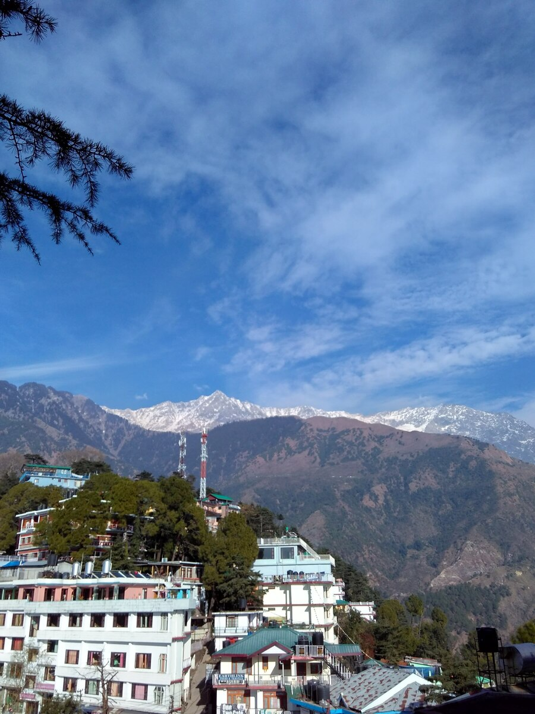
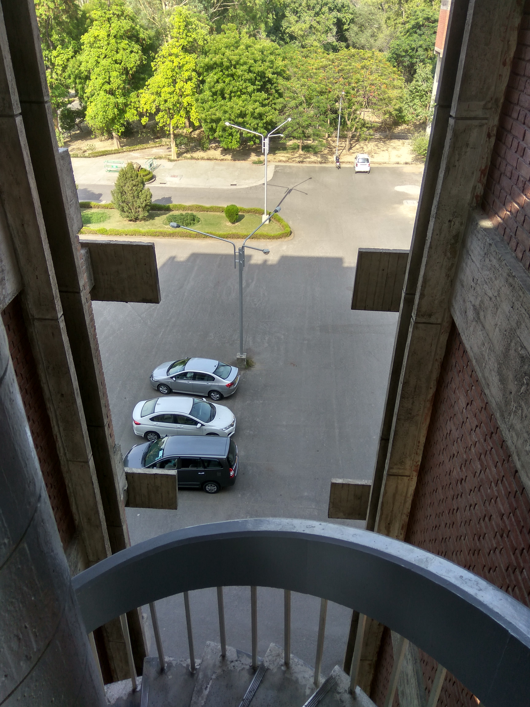
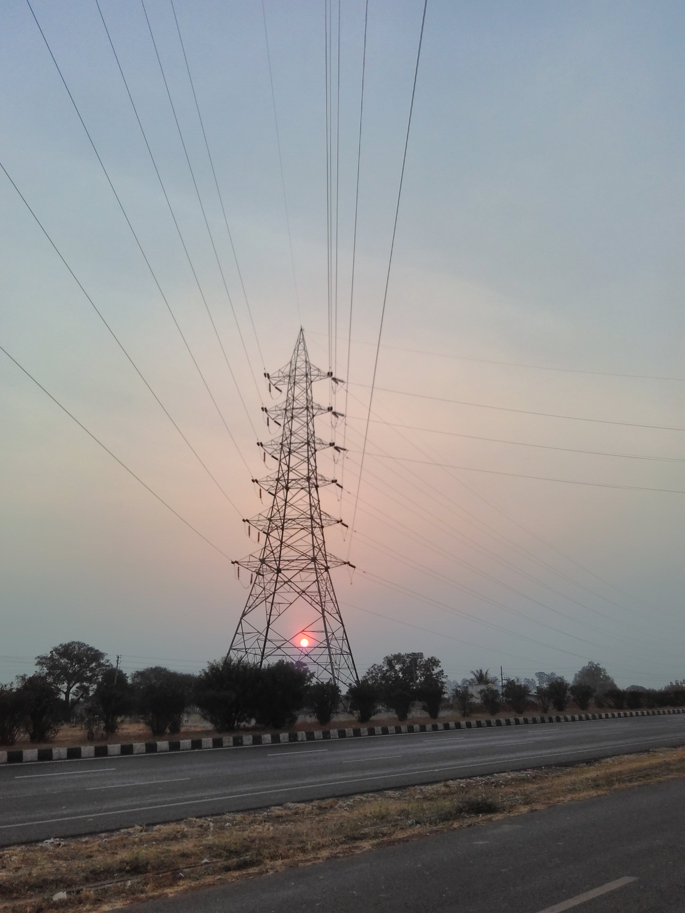
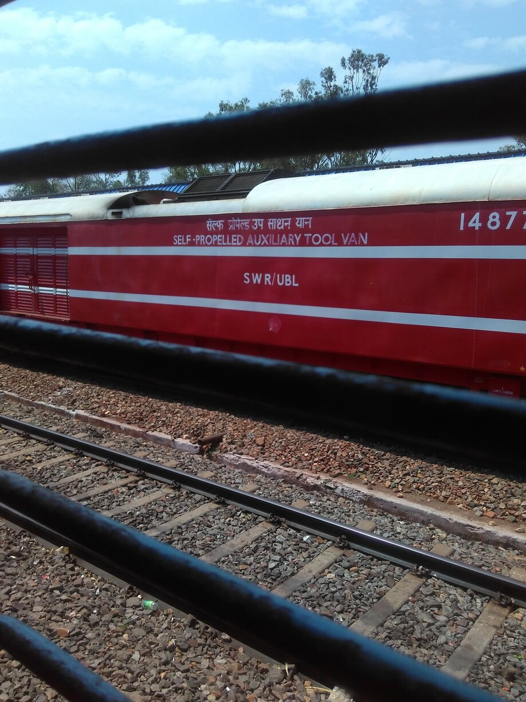
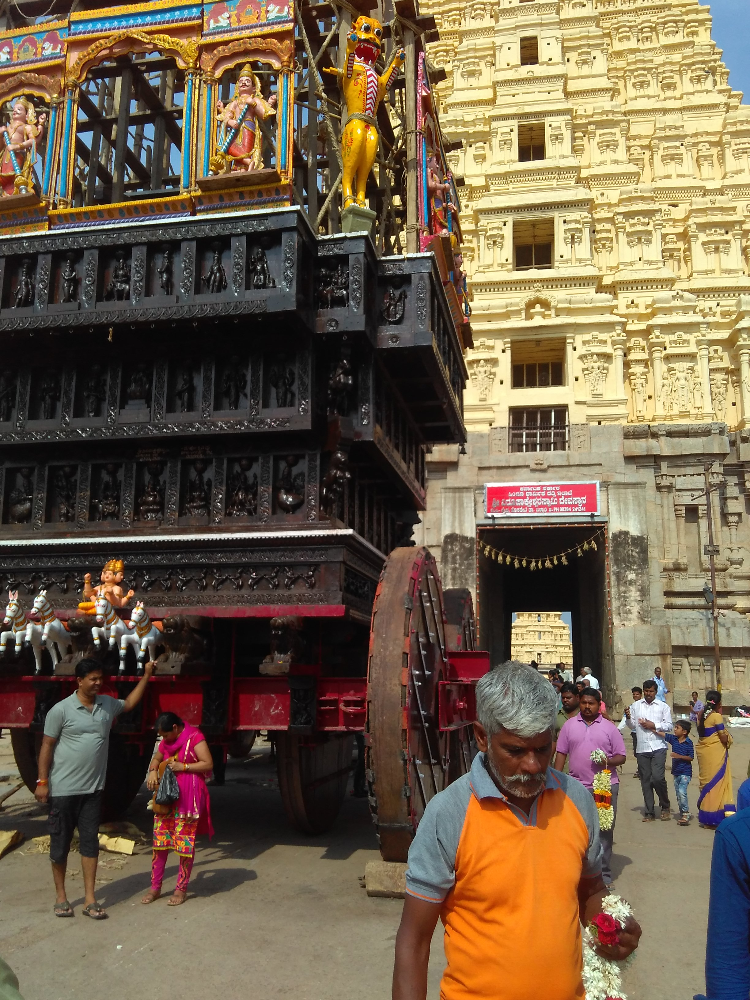

{{ "Hope to meet you there..." | downcase }}
- I attended and made a paper presentation (co-authored with Prof. Sayantan Datta) at the Critical Writing Pedagogies Symposum held at Ashoka University from 6th to 7th April 2024. Our paper titled "Form and Formula -- Reflections on Teaching Technical & Journalistic Writing in Mathematics" won the inaugural Sage-Ashoka Award for Critical Writing Pedagogies.
- I attended and gave a set of two lectures on Bloch Wave Homogenisation at the Workshop on Multi-scale Analysis and a Conference on Differential Equations (MSADE-24) held at Department of Mathematics, IIT Ropar from 26th February 2024 to 2nd March 2024.
- I attended and gave a talk at a Discussion meeting on "Control Theory meets Theory of Homogenization" held at Department of Mathematics, IIT Bombay from 28th February 2023 to 4th March 2023.
- I am visiting TIFR Centre for Applicable Mathematics from 23rd December 2022 to 1st January 2023.
- I have joined Krea University as an Assistant Professor in November 2022.
- I presented a talk on "Regularity theory for parabolic fractional p-Laplace equations" on 16th August 2022 in a Mathematics colloquium at TIFR Centre for Applicable Mathematics, Bengaluru.
- I presented a talk on "Regularity theory for parabolic fractional p-Laplace equations" on 13th July 2022 in an online Mathematics colloquium at Departamento de Matemática, Facultad de Ciencias Físicas y Matemáticas, University of Concepción, Chile. The video recording of the colloquium may be found here on YouTube.
- I presented a talk on "Regularity theory for parabolic fractional p-Laplace equations" on 07th June 2022 at Chennai Mathematical Institute.
- From July 26 to July 30 2021, I attended the "Workshop on Perturbation of Spectral Bands and Gaps" held virtually on Zoom at Fakultät für Mathematik, TU Dortmund. I presented a talk on "Generic simplicity for spectral edges with applications to homogenization theory" on 27th July 2021 whose Zoom recording may be found here
- From February 15 - February 19 2021, I attended the online Discussion Meeting on Multi-scale Analysis: Thematic Lectures and Meeting
(MATHLEC-2021) (ONLINE) organized at International Centre for Theoretical Sciences, Bangalore. I presented a research lecture at this event titled "Bloch wave homogenization of quasiperiodic media".
- I have joined TIFR Centre for Applicable Mathematics as a postdoctoral fellow in October 2020.
- I was one of the tutors for the Advanced Instructional School on Geometric Analysis which was held from 9 to 28 December 2019 at Indian Institute of Technology Bombay, Mumbai, India.
- From August 26 - September 6 2019, I visited International Centre for Theoretical Sciences, Bangalore to attend a discussion meeting on Multi-scale Analysis and Theory of Homogenization. I presented a research lecture at this event titled "Simplicity of Spectral Edges and Applications to Homogenization" whose video recording may be found here on YouTube.
- I was on the organizing committee of the Diamond Jubilee Symposium of the Department of Mathematics, Indian Institute of Technology Bombay which was held in 4-6 January 2019.






